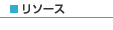

|
 |
|||||
|  | ||||||
S2ClickS2Clickとは、Seasar2とClick Frameworkを組み合わせて利用するためのアダプタです。 以下のような機能を提供します。
サンプルを動かしてみるリリースアーカイブを展開するとs2click-example.warというwarファイルがあります。 これはS2Clickのサンプルアプリケーションです。 Tomcatなどにデプロイし、Webブラウザからhttp://localhost:8080/s2click-exampleにアクセスすると動作を確認することができます。 スタートアップリリースアーカイブには以下のzipファイルが含まれています。これらはS2Clickによる開発をはじめるためのブランクプロジェクトです。 そのままEclipseにインポートしてご利用ください。
なお、ブランクプロジェクトは以下の環境が前提となっています。
プロジェクトをインポートしたらWebContent/index.htmを右クリックし、 コンテキストメニューから[Run As] > [Run on Server]を選択してください。 Tomcatが起動し、足し算アプリが表示されるはずです。 なお、S2ClickのHOT deploy機能を利用する場合、Tomcat側でコンテキストのリロードが実行されないようにしておくと便利です。 WTPでは以下の手順でコンテキストのリロードを無効にすることができます。
S2Clickの設定s2click.diconでS2Clickの設定を行います。 org.seasar.s2click.S2ClickConfigのプロパティをセットすることで、 Clickの設定ファイルとほとんど同じ設定を行うことができます。 Clickの設定ファイルであるclick.xmlは作成する必要はありません（作成しても無視されます）。
<?xml version="1.0" encoding="UTF-8"?>
<!DOCTYPE components PUBLIC "-//SEASAR//DTD S2Container 2.4//EN"
"http://www.seasar.org/dtd/components24.dtd">
<components>
<component class="org.seasar.s2click.S2ClickConfig">
<property name="formatClass">
@org.seasar.s2click.example.util.S2ClickFormat@class
</property>
</component>
</components>
S2Clickではページの自動マッピングは常に有効です。 また、ページクラスを配置するパッケージはSeasar2の規約に従ってconvension.diconの設定を使用します。
<?xml version="1.0" encoding="UTF-8"?>
<!DOCTYPE components PUBLIC "-//SEASAR//DTD S2Container 2.4//EN"
"http://www.seasar.org/dtd/components24.dtd">
<components>
<component class="org.seasar.framework.convention.impl.NamingConventionImpl">
<initMethod name="addRootPackageName">
<arg>"org.seasar.s2click.example"</arg>
</initMethod>
</component>
</components>
この場合、ルートパッケージに.pageをつけたorg.seasar.s2click.example.pageパッケージにXxxxPageというクラス名（末尾がPageで終わるようにする） でページクラスを作成しておくと、自動的にS2Containerに登録されます。 publicフィールドの活用Seasar2ではJavaBeanに無用なアクセサを設けず、publicフィールドを活用することが推奨されています（もちろんカプセル化の観点からアクセサメソッドを用意したほうがよいケースもあります）。 しかし、ClickはJavaBean規約に従いアクセサメソッドを持ったJavaBeanの利用が想定されています。 そこで、S2ClickではClickでもpublicフィールドを活用するための機能を提供します。
リクエストパラメータのバインドClick Frameworkは標準でページクラスのpublicフィールドに同じ名前のリクエストパラメータをバインドする機能を備えています。 しかし、S2ClickのページにはDI用のpublicフィールドも存在するため、リクエストパラメータによるDI用フィールドの上書きを防ぐため、 リクエストパラメータの自動バインド機能は利用できません。 代替手段として、@Requestアノテーションを付与したpublicフィールドにリクエストパラメータをバインドすることができます。 デフォルトではフィールド名と同じ名前のリクエストパラメータがバインドされますが、 @Requestアノテーションのパラメータによって別の名前のリクエストパラメータをバインドすることもできます。
public class HelloPage extends Page {
/** idというリクエストパラメータをバインド */
@Request
public String id;
/** articleというリクエストパラメータをバインド */
@Request("article")
public String articleId;
}
ページクラスの基底クラスJSONS2ClickはAjaxでの利用を想定し、JSONを返却するページクラスの抽象基底クラスを提供しています。 JSONを返却するページはorg.seasar.s2click.page.AbstractJsonPageを継承して実装します。
@Path("/sample-json.htm")
public SampleJsonPage extends AbstractJsonPage {
public SampleJSONPage(){
List<Employee> list = new ArrayList<Employee>();
...
setContents(list);
}
}
ファイルダウンロードJSONを返却するページと同様、ファイルダウンロードを行うページの抽象基底クラスも存在します。 ファイルダウンロードページはorg.seasar.s2click.page.AbstractJsonPageを継承して実装します。
@Path("/sample-download.htm")
public SampleDownloadPage extends AbstractDownloadPage {
public SampleDownloadPage(){
setFileName("sample.txt");
setContents(SampleDownloadPage.class.getResourceAsStream("sample.txt"));
}
}
注意： JSONを返却するページやファイルンダウンロードページはページクラス内でレスポンスが書き出されるためHTMLテンプレートは不要ですが、 ClickはHTMLテンプレートと対応するページクラスを自動マッピング対象として扱います。 したがって上記の実装例では@Pathアノテーションで自動マッピングするパスを明示的に指定しています。 S2Clickはこのアノテーションを読み取り、自動マッピングの対象に加えます。 コントロール
ユーティリティorg.seasar.s2click.util.S2ClickFormat
Click標準の
トランザクションの制御Clickは1リクエストでページクラスのメソッドを複数回呼び出します。 そのため、ページクラスのメソッドに対してトランザクション制御のためのインターセプタを適用しようとするとメソッドごとにトランザクションが完結してしまいます。 S2Clickでは1リクエスト=1トランザクションでトランザクション制御を行うためのS2ClickServletTxが付属しています。
<servlet> <servlet-name>ClickServlet</servlet-name> <servlet-class>net.sf.click.S2ClickServletTx</servlet-class> <load-on-startup>2</load-on-startup> </servlet> 情報源
|
|||||||||||||||||||||||||||||||||||||||||||||||
| Copyrightc 2004-2008, The Seasar Foundation and the others. All rights reserved. |